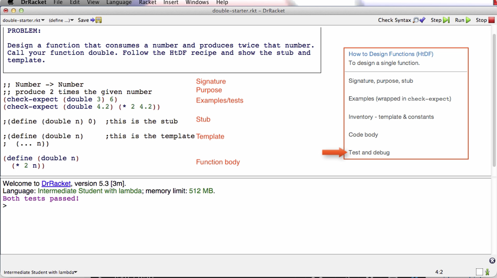
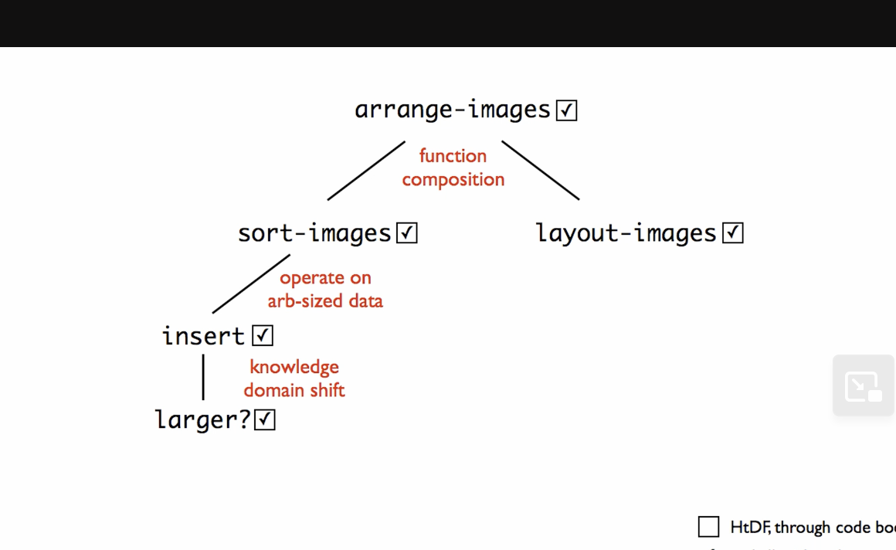

SPD First Half Modules
Here are the SPD's first half module summaries.
Module 1a - Beginning Student Language
This module introduces a specially designed programming language called the Beginning Student Language. The language is small and simple. Its simplicity allows us to spend more time on learning the design method which is the real focus of the course.
The course also states that learning the design method using BSL will help you adapt the material you learn in this course to other programming languages. I can see how the general concepts could apply to other programming languages, more on that later.
This course is targeted at students who have never programmed before. I, myself, have a lot of programming experience, so clearly I am not the target audience of this course. I’m trying to give it a review from my perspective as an experienced programmer, but also trying to put myself in the shoes of a beginner programmer.
This first module was easy, but I decided to make sure I learned it and not skim it. The topics covered are expressions, evaluations, strings, images, constant definitions, function definitions, booleans, if expressions, using the stepper, and how to discover primitives.
For this review, I won’t go into details about what each module teaches because this review would turn out to be too long. Instead, I plan to give overview of what is covered, discuss key points along with my thoughts, and maybe go into detail on some topics.
But module 1a is pretty straightforward and anyone should be able to pick it up easily.
Module 1b - How to Design Functions
Now, we get introduced to the design method for functions
At first, the how to design functions recipe may seem like overkill, or it may seem overwhelming. You might think that these functions could be written more quickly without the recipe. You are right! Design methods often make simple problems harder to solve. In this module, we are using simple problems to learn how to use the design method. This will pay you back later by making really hard problems much easier to solve.
The recipe for how to design functions will tell us what to do first, and second, and third, all the way through the design of a function. It helps us know what to do, and it also helps us be sure that we end up with a high quality function. The instructor claims that it’s been well tested.
The way this is going to work is that you're going to use simple functions to learn the recipe, and then you're going to use the recipe to do the hard functions later. If you’re a beginner, it’s going to seem like there’s a lot going on. Be patient and work through it with the instructor. It will become familiar over time. If you’re experienced in programming like I am, then it’s going to seem like overkill. Be patient also. Within a few weeks, you will be designing much harder functions than you could design otherwise.
We start by being walked through a simple example using the design recipe. Here are the five steps:
- Signature, Purpose, Stub
- Examples (wrapped in check-expect)
- Inventory - template & constants
- Code body
- Test and debug
Here is a visual example of what they look like implemented in code from the lecture video:

The job of the signature is to tell me what type of data a function consumes and what type of data it produces. This the above example, the function consumes a number and produces a number. The two semi-colons prepended is a comment annotation.
The job of the purpose is to give me a succinct description of what the function produces given what it consumes. The purpose needs to say more than the signature. We also want it to be short.
The stub is a placeholder that we’re going to put here for a short period of time. Later in the course, it is deleted. The stub is a function definition that has the correct function name, has the correct number of parameters, produces dummy result of correct type. When we run the tests in the next step, even though they fail, this will help us to make sure that the code is well-formed.
The examples can also be called tests because they will serve both roles. It’s easier to design a general function if we have some specific examples of what it’s going to do. So in this case, we write a check-expect that if we call double with an argument of 3, then what we expect to get back is 6.
When we click the run button, the check-expects will run and tell us if the actual result matches the expected.
Even if the tests fail given the stub, it’s letting us make sure that the tests actually run. This is good to do early on because the sooner you find a mistake the easier it is to fix.
One general note is that every step of the recipe is intended to help with all the steps after it. That’s how the recipe is helping you. It’s letting you slowly build up the knowledge you need to design the final function.
The next step of the recipe is the template or sometimes called the inventory. The template is a function with the right function name and the right parameter. For this example, the body of the template is just (… n). We can interpret this to mean “we’re going to do something with the parameter n”. The … means to do something. The role of the template is to give us the outline of the function.
Later in the course, we remove the template and stub, but for now we keep it there commented out before writing the body.
Next step is to code the function body. In this step, you will use everything you’ve written before to help you know how to finish the function body. One thing that’s useful to do sometimes is to elaborate the examples. For example, in the above image, we know 4.2 doubled is 8.4 because it is 2 * 4.2.
Last step is to run the tests. For the above example, they pass. If they don’t pass, later in the course the instructor goes over what to do.
The goal here is not to memorize the recipe but to learn how to use it as a resource in designing increasingly more complicated functions. With practice, you are more likely to internalize them.
If a test fails, it could be that the function definition is wrong, the test is wrong, or they are both wrong. Check the test before fixing the function definition. You need to make sure the test is right because if the test is wrong and you make the function conform to it, then the function will be wrong.
The instructor goes over in detail extra things to consider like what to do if tests fail, what to do with incomplete information, how many tests are enough, code coverage, boundary cases or corner cases, etc.
The instructor also stresses the important of learning by doing. That is, taking the blank starter file and working through the problem yourself from beginning to end. He encourages us to not look at the solution after looking at the problem. If you do that, you’re going to say to yourself, oh, I know how to do this; and so you’ll have a false sense of knowledge.
This is an important point for later in the course. You might be tempted to look at the solutions. And to be fair, you might end up having to look at some of them. Try to aim for doing most of them on your own, only looking up the solution after you are truly stuck, then reasoning about how you would get there using the recipe. The design recipe will be helpful, along with the tips from this module.
In my view, I like the design recipe for the most part. It helps you get the ball rolling, and so you have a process to follow when solving a programming problem instead of staying stuck on a blank screen. I like the habits it’s building for designing functions. In general, the steps can be applied to other programming languages when writing functions there. My only problem with this process is step 4 - Code the Body. Step 4 can seem a bit ambiguous. Like code the body but how? The instructor says we should have enough information from previous steps to be able to do this but what if we’re still not able to code it? There’s sort of an implicit “just do it” vibe here, instead of breaking it down further. I think it’s fine for simple problems with simple code implementations, but for complex code bodies later in the course, “code the body” is not a straightforward step. I’m having a hard time imagining how it is for beginners later in the course. For me, I am already trained to think programmatically before I entered this course so step 4 is not too difficult for me.
I think the intuition that writing programs is basically telling a computer what to do step by step is important for doing this step. Perhaps that intuition gets built implicitly throughout the course and so we don’t need to delve deep into the sub process of step 4. Perhaps introducing the stepper and going through stepper examples is enough to internalize this intuition. Perhaps with enough practice on simpler problems, beginners will be able to make the jump and have good enough chances of implementing step 4 on the more complex examples later in the course. Maybe I’m just over analyzing this. But the main thing that comes out to me is that the other steps are straightforward but step 4 is where there can be more ambiguity, and I think it’s the biggest of all the steps.
Module 2 - How to Design Data
In this module, we learn how to design data representations of problem domain information. While systems tend to have more function designs than data designs, the design of the data turns out to drive the design of the functions. So data design is a critical part of program design.
When we design data, we make decisions about all the functions that later operate on that data.
This module also covers cond expressions, which is basically like a switch statement. A cond is a multi-armed conditional.
Data definitions
Data definitions explain how information is represented as data. This is a crucial part of program design and has a significant effect on the design of every function that operates on that data.
We are given an example of traffic lights. Before doing a data definition, we are shown a basic function implementation. Instead of colors, numbers 0, 1, and 2 are used.
The problem is the signature says Natural for arguments but we are only using 0/1/2, so 3 falls under that umbrella but it shouldn’t.
Between a problem domain and a program, we take information and represent it using data. In this case, we represent the fact that some light might be red using the natural number zero. And vice versa.
Instead of interpreting data like this in a piecemeal way, we are going to use something called a data definition. And that data definition is going to tell us everything we need to know about how we represent information as data.
In this next version of the traffic program, we divide the file into two parts. 1. Data definitions, 2. Functions. Data starts with a type comment. There are examples, a definition, and a template for how to use this data.
Now, instead of having Natural -> Natural in the signature of the function below, we can have TLColor -> TLColor, and by looking at TLColor above, we can see that it only takes in values 0/1/2.
The template of a function can be determined by the type of data it consumes. This is what we mean when we say that data design drives function design.
This data definition has made this program much more meaningful.
Data definitions help us understand the relationship between information and data. And how data represents information, and how data can be interpreted as information.
That’s the overview of why we use data definitions. In the next lectures, the instructor talks about and shows us how to actually design data using the How to Design Data and Data Driven Templates recipes.
There is some power of working with a systematic design process. One piece of that is that you always know what to do next.
The instructor says that the HTDF and HTDD processes are orthogonal. In other words, they can be learned independently, while also having the benefit of being able to be combined.
Structure of Information Flows Through
A summary of the week, highlighting how identification of the form of information to be represented flows through the rest of the program.
We saw a phenomenon after doing examples in this week’s module. Which is that once we identify the structure of the information, the inherent structure of the information, that gives us the structure of the data used to represent it, which gives us the structure of the template, which gives us the structure of the function, and also we get guidance about the test for that function.
So identifying the structure of the information is really a key step in the program design, at least for many kinds of programs, the ones we’re going to look at for the first two parts of this course.
As data definitions get more sophisticated, what you’re going to see is that there are different choices you can make about the data that you’ll use to represent information. And by making different choices, you actually have a lot of influence on the rest of the program, because of the information flow.
So designing data is a very high point of leverage for designing programs. There are some programs for which that’s less true.
But for many programs this approach, this data driven approach, does a very good job of producing the structure of large parts of the program.
What we’ll see later in the course are some examples where the control structure becomes dominant. And what we’ll learn in that part of the course is how to blend templates based with control structure together with templates based on type comments, or templates based on a form of data, to produce the dominant structure of our program.
But even in those programs, the form of the information determines the form of the data. And the form of the data determines the form of many of the functions that operate on data.
So identifying the form of the information remains a key step in the design of programs. That’s going to be true throughout the course and throughout all programs you write.
Module 3a - How to Design Worlds
In this module, we learn how to design interactive programs that use the DrRacket big-bang functionality. We will make simple animations of animals walking across the screen that can be controlled by the keyboard and the mouse.
In learning this process we also cover basic techniques for systematizing your work on larger programs.
This module is complemented by the Compound module, which allows us to create more complex data definitions, that in turn support more complex world programs.
Note: the videos are long because they work through the entire process of designing an interactive program. As a result, what’s covered is not new; it is HtDF and HtDD problems you already know how to do.
The videos help students see how all the pieces fit together. It’s recommended to use some of the videos as a kind of TA tutorial hours — try to work the problem on your own and check in with the video now and then to see how your solution compares to theirs.
Going through the design of interactive programs will give you a better understanding of how some of the programs that you use every day work.
Project 1 at the end of the week is to design a simple one-line text editor.
Big bang — a mechanism that supports interactive programs.
We go through simple examples such as a countdown and a cat moving across a screen that both reset when you press the space bar.
The way it works is that big bang starts with an initial state, and then it’s coordinating, calling functions like render-cat and next-cat, to produce the combined behavior of the interactive program that we want to have.
Next, we get into the how to design worlds recipe. That’s a process that lets us systematically design interactive programs, or what the Big Bang calls world programs.
It has two parts. It first has an analysis part that takes place with paper and pencil. And then it has a second part where we actually take the analysis and develop code for it.
For the first part, we’re supposed to draw two or three pictures that show different stages/states in the progression of the program. The next thing we do is identify the constant information. This is information that does not change through the progression of the program. For example, width and height of the screen. The cat’s y-coordinate doesn’t change, the background image, and the cat image.
Now a real important point about this analysis is that you should do it in this order. You should try to identify all the constants. In a complicated program, you’re not going to identify them all. You’ll realize part way through the process that you were missing one, and that’s just fine. Just go back and add it to your list.
We’re also going to identify the changing information. In this case, it is straightforward. It’s just the x-coordinate of the cat.
And the last thing we’re going to identify is the big-bang options. And the recipe gives us a table that helps us do this. It tells us what options we have to support the behavior our program has. On-tick and to-draw options were identified to be used for this example.
Before we get to the next part, which is to write the Big Bang program, the instructor says that templates are not a beginner’s approach to programming. He says that the method we’re going to learn in this course is what he does when problems get hard. So what templates are — the way they are meant in this course — is they’re an experts way of saying, gee, before I start on this function or program, what do I know about the basic structure of it before I get to the details? So data-driven templates are saying, given that I know what type of data this function consumes, what do I know about the structure of this function?
And later on in the course, we’ll see templates where we know given that I know I’m using this basic kind of algorithm, what must be true about the structure of the program before I get to the details? Templates are an idea that you can use throughout your career, no matter how sophisticated a programmer you get to be.
When you get a hard problem and you don’t quite know how to do it, you first say, well, what do I know about the basic structure of the program before I get to the details? That’s an incredibly powerful idea. And it’s not one that’s just for beginners.
Templates do something else important. Or rather the way the recipe is structured does something else important, which is templates break the process of design down into steps of the process, not just pieces of the solution. So you get to break down the overall work into smaller and more manageable pieces.
As you get to be a better programmer, you won’t template very simple functions, or you’ll kind of template them in your head or something. But the idea of templates, the idea of getting the basic structure of a piece of code before you get to the details, you’ll always have that idea. And you can use it when the problem gets too hard to just immediately write down the solution.
End note about templates idea in general and their importance.
The instructor follows the design recipe from the website to implement the code for the Big Bang cat example. The rest of the video is a code along. The code has a clear traceability to the analysis. He continues by using the HtDF recipe to implement the functions.
Working through the wish list. As the programs get bigger, we often have lots of incomplete functions that we need to finish before we’re done — aka wish list. The most important thing in this video is that we’ll be using a wishlist mechanism to keep track of work that remains to be done. He uses !!! As a way to keep track. In my career, I’ve used TODOs in comments. Might have to try using !!! For implementing functions.
The big benefit of having a systematic process is it lets you work on one thing at a time and know that it’s all going to work out.
Programs are always changing. The analysis is a model of the program. Can think about what we need for the program at the model level, then quickly run through the program catching it up to the new model or analysis. It’s one of the things that separates program designers from people who write code that just happens to work.
Module 3b - Compound data
In this module you will learn how to design compound data definitions to represent information that consists of two or more naturally connected values, as well as how to use such data as a world state in HtDW problems.
Just a new type of data structure that can contain more than one thing in it.
Module 4a - Self-reference
Using the idea of self-reference to represent arbitrarily large amounts of information.
This is racket’s way of making lists and iterating through them.
We go over list mechanisms along with the list data definition. Here we are introduced to data definitions that reference itself and functions that call themselves. This is the first introduction to recursion functions, which seems to be a core concept in this course. He doesn’t explain why it’s like this at first, saying that in the next 2 videos he will discuss.
He shows an example of the recursive function working then goes on to explain why it all worked out.
He explains by noting two properties that a well-formed self-reference data structure has. That is, at least one base case and at least one self reference case.
If you have an arbitrary amount of information (meaning we don’t know the size of) you need to represent, you need to use a well formed self referential data definition.
I’m experienced with recursion since before I took this course. Not sure how a beginner would do because recursion can be hard to grasp. But I think the instructor is doing fine explaining it. I think he could have really drove the point had he showed us what the natural recursion looks like in the stepper. He kinda assumes that we’ll make the connection of the recursive calls and iterating through each item. But I mean, it shouldn’t be that big of a jump, so I think a beginner can grasp this concept. Or maybe the curse of knowledge has got me and perhaps it’s not super straightforward for beginners.
Instead of going through the stepper though, the instructor says to “trust the natural recursion”. That is, trust that the recursive call is going to do its job. There’s some abstraction going on here, you don’t need to understand at the step-by-step execution level what’s going on. Simply by what we expect the function to do on the list of data we can reason about the behavior of the program.
I don’t want to get into a pedagogical debate about the best way to teach recursion. I think that this way is fine. The good thing is that he gives us conditions for when to use recursion and the design recipes help to ensure that we get the right code structure for recursion. So there’s training wheels here for the students.
He goes over some walkthrough examples which are helpful in digesting this information.
Module 4b - Reference
In this module we take a small but very significant step in terms of the complexity of the information we can represent as data.
This data involves something called reference, and it comes up when the information we’re trying to represent naturally has different related parts.
We go through a more complex example than we’ve seen before. Once again, if not mentioned before, constants support a single-point of control. They make it easier to change the program later. The existence of the constants matters a lot more than whether their actual values are right — we can change their values later !
The reference relationship is basically when you have a list type that uses a compound data definition, or whatever data definition that we have defined before that’s NOT a primitive type, the data definition of the arbitrary sized list refers to the other data type that we created; hence, the reference relationship. There will be what’s called a natural helper in the templates, and in the final function, there’ll be a helper function call.
We’ve seen this before, it’s a theme of this part of the course. The structure of the information determines the structure of the data determines the structure of the templates determines the structure of the functions.
Then we see how this plays out in the code example.
This course is teaching us how to go about solving programming problems in a systematic way. By systematic, they mean that there’s a process or steps to follow, that build on each other, so that we always know what to do next.
During this lesson, the instructor emphasizes the importance of doing examples before the function definition. This is a good practice in general when solving programming problems, so I like that he’s emphasizing this. He mentions that he will spend quite a lot of time just getting the examples right. And says that once he does that, the function definition itself will be a lot easier. This is a demonstration of the power of the way the systematic method puts examples before function definitions.
Basically, when you reference a non-primitive data type, you want to use a helper function in the template and final function.
He runs examples right away to make sure it makes sense, like images for example. Finding a mistake right after you make it is easier than finding it five minutes later. Especially doing examples for drawing images.
Doing examples before the function:
- Helps us figure out what we want the function to do
- Helps us remember the names of primitives we need
- Helps us get details like order of arguments right
With the examples before the function we can figure all the above out in specific cases, rather than the general purpose behavior of the function. That’s easier.
What the recipe does is to get us to always do the easiest task next, chipping away at the overall function design problem, making what’s left easier and easier.
Here is why we do the examples before we do the function right here. The problem is hard enough that figuring out specific examples takes time. We got to figure out how we want to draw. Gee, we didn’t use the right drawing function. Gee, we got the wrong order of arguments to this function. There’s a whole bunch of stuff we had to figure out for the specific examples. Trying to write the general-purpose function is always harder than writing a specific example. So if you’re working on a problem where the specific examples are hard, it’s crazy to try to write the general-purpose function first. The whole idea of this “doing the examples first” method is do the simplest things first. Because in hard problems, even the simplest things aren’t that simple. The examples force us to figure out what it is we really want. And once we know what we really want, coding the function definition is a lot easier.
Okay so this all makes sense for the example he gave with aligning vertical rectangle bars side by side. For DrRacket and this particular example, an example of the function’s code steps can be written directly into the test case. This may not be true for other languages, such as python, where a hard problem can have multiple lines of code executed in a way that’s unlike dr racket, where the code steps happen in a nested fashion rather than separate lines of code that are not nested.
I think in python, someone might get confused at this step of examples. Don’t get me wrong, I think in general, no matter the programming language, it is a good practice to do examples before implementing the function. But I think that in other languages, you might need to do the example in an interpreter step-by-step instead of trying to cram it all in one test case. That’s the main difference between this dr. racket example and other languages like python. Do the example in the interpreter or in a separate test file script and run it on the example.
Comparing this approach to the 7 steps method from Duke University, I suppose it’s possible in addition to or instead of doing the example by hand, to do the example in the interpreter or console. We can take the best parts of both worlds and combine them, or tweak things a bit.
Wishlist entries. Make a wish for a function to exist, then implement it.
Natural helper in template means do not do something complicated with the referred to type here, instead call an existing function or wish for a new one.
What’s really key here, designing data is actually making important decisions about the design of functions. And we’re going to see that again and again in the next few weeks of the course.
Week 5a - Naturals
For operating on natural numbers, the structure is similar to operating on lists. To process or traverse all elements from 0 to n, we recursively reduce n until we get to the base case 0, applying any operations in between. In the recursive call, we apply add1 or sub1.
Importantly, know that when we design programs, we come up with data definitions that represent information, and we can take any data to represent any information we want. The example from the video was that, assuming we no longer had access to the Number primitive, we could use a list of strings to represent natural numbers. Now of course, the underlying hardware makes some primitive data faster than other primitive data.
Week 5b - Helpers
In this module, we learn several new rules for breaking design problems into pieces, learning several rules for breaking a function down into multiple functions.
The good news is that while the problems get larger, the work to do at any moment in time does not get harder. Most of the work is HtDD and HtDF work you already know how to do. That's the contribution of the design method, to reduce ever more complex problems to smaller pieces you know how to solve.
The key to solving complex design problems is to break them down into smaller pieces. The recipes already help do that. But sometimes we need more decomposition than that.
Sometimes we need to break a data representation into multiple types or a function design into multiple functions. We’ve seen examples of these already. When we have the reference rule, we end up with a natural helper function, for example. This week, we’re going to look at more examples of how we break types and functions down into multiple types and multiple functions.
Big design problems need to be broken into smaller pieces in order to be tractable.
A function should be split into a function composition when it performs two or more distinct operations on the consumed data.
The instructor proceeds to give us some examples. In the first example, we start with one function and end up designing five.
For example, here we have a function that does two distinct operations: ;; ListOfImage -> Image ;; lay out images left to right in increasing order of size ;; sort images in increasing order of size and then lay them out left to right
That is, lays out images, and sorts images.
We can say, “first sort the images, then layout the sorted list”
Instead of trying to do both operations in this function, we can utilize helper functions so it looks like this:
(define (arrange-images loi)
(layout-images (sort-images loi)))
The tests would be different. For arrange-images we do not need to fully exercise layout-images and sort-images; but we do need to test the combination of the two functions, while the other two test their respective operation.
This is a great way to better organize your programs and make them more readable.
When you start to get into bigger programs, lots of programmers actually keep a pad of paper by their desk, to kinda keep track of where they are in something. The wishlists or TODOs are good for that, but pen and paper is too. Drawing pictures can help keep track of where you are.
When we shift knowledge domain, we should use a helper function.
Helper function rules summarized:
- Function composition rule: a function should be split into a function composition when it performs two or more distinct operations on the consumed data
- For example:
- (define (arrange-images loi)
- (layout-images (sort-images loi)))
- For example:
- Operate on arbitrarily sized data rule (aka operating on a list rule): When an expression must operate on a list -- and go arbitrarily far into that list -- then it must call a helper function to do that.
- Example:
- (define (sort-images loi)
- (cond [(empty? loi) empty]
- [else
- (insert (first loi)
- (sort-images (rest loi)))])) ;result of natural recursion will be sorted
- The helper function we are calling here is insert.
- Example:
- Knowledge domain shift: When we shift knowledge domain, we should use a helper function.
- Example:
- (define (insert img loi)
- (cond [(empty? loi) (cons img empty)]
- [else
- (if (larger? img (first loi))
- (cons (first loi)
- (insert img
- (rest loi)))
- (cons img loi))]))
- The domain-shift helper function call here is larger?
- However, if larger? Was a built-in helper function that we could use, then we wouldn’t need to create our own separate helper function. Just use the built-in one.
- Example:

When we design more complicated functions, we end up having to design a bunch of helper functions as we use different helper rules to split the work of the main function out.
Whenever you're designing functions-- the rest of this course and in the rest of your life-- keep these helper rules in mind. They're good guidelines for where to put in a helper function. Some programmers will adopt their own style for using rules in other places, but these are good general principles for where to put helper functions.
Also learned how to sort in racket.
As functions get more complicated you are more and more likely to want to add examples as you get into coding.
Sometimes the signature can’t say everything that matters about the consumed data. In those cases we can write an assumption as part of the function design.
Remember that in bigger programs the tests would be in a separate file, so these constants would go in that file as well.
Fun point where you’ve built up a whole chain of helpers, going from an initial function to a helper to a helper to a helper — and you finally finish that last helper and bang, bang, bang. If you’re lucky, the whole thing works. You’re not usually that lucky. You’re almost never that lucky. Usually what happens is you get that final piece done and a bunch of tests start working. But sometimes what happens is, there’s some tests that are broken — like in this case, where there was a broken test. Other times what happens isn’t that tests are broken, but that some function along the way actually isn’t correct. And then things will only partially work or not work at all.
But whether it all works in one fell swoop or not isn’t so much the real issue, as much as that they’re going back to this picture. What happens is, all at once, all our boxes get checked off, because we finish the helper larger, which finishes the chain of functions.
So from these lectures, for the first part of this week — two main lessons:
- One is some more helper rules — the rule about function composition, the rule about operating on arbitrary size data, the rule about a change in knowledge domain.
- The other is this more macro notion that, very often, when we design more complicated functions, we end up having to design a bunch of helper functions as we use different helper rules to split the work of the main function out. These rules have an effect similar to the effect that the reference rule has, but in these examples, we’ve seen some additional rules.
Module 6a - Binary Search Trees
In this module we will investigate how the structure of data affects performance, especially when it comes to the time required to find an element in a large data store. As part of that we will discover a new self-referential form of data, the binary search tree or BST.
We will also learn to design data definitions and functions for BSTs. We will not need any new design techniques for this; we already know enough to do it. In fact, the recipe rules we have already covered can work with a wide range of self-referential data.
The programs are bit longer again in this module. To avoid feeling overwhelmed by the new form of data it is really important to let the design recipe help you focus your attention. Don't try to think about the whole problem at once - focus on the current step of the recipe only.
Also be sure to trust the natural recursion! That's the key to making it easy to design functions that operate on data that has self-reference in its definition.
List abbreviations
How we create lists in racket: Before: (cons “a” (cons “b” (cons “c” empty))) New list abbreviation: (list “a” “b” “c”)
List is a primitive for constructing lists.
So why have we been using “cons”?
When you construct lists one at a time, you still want to use cons.
In other words, if you want to add one element to a list, use cons. List notation won’t work as expected.
We are given an example of searching for an element in a list.
After this, the next video discusses the binary search optimization on sorted data.
Another thought that came to mind is that understanding recursion before taking this course really helped me understand the recursion topics quickly.
Next videos we go over the binary search tree, including how it works, the data definition, lookups, and rendering the BST as an image.
This concept is standard to get taught in a computer science curriculum. This may also come up in technical interviews, so if you’re a beginner, this is a good exposure to the concept.